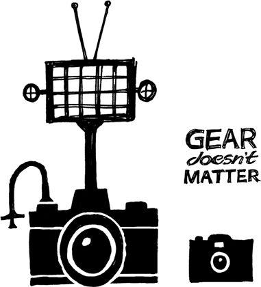

{% include JB/setup %}
{% raw %}
<div>

<h2 id="filepos95587" class="calibre19"><span class="calibre2"><a class="calibre13"></a><strong class="calibre14">Focus on what won't change</strong></span></h2><div class="calibre4"></div>
<p class="calibre7">A lot of companies focus on the next big thing. They latch on to what's hot and new. They follow the latest trends and technology.</p>
<p class="calibre17">That's a fool's path. You start focusing on fashion instead of substance. You start paying attention to things that are constantly changing instead of things that last.</p>
<p class="calibre17">The core of your business should be built around things that won't change. Things that people are going to want today <em class="italic1">and</em> ten years from now. Those are the things you should invest in.</p>
<p class="calibre17"><a href="http://Amazon.com" class="calibre9">Amazon.com</a> focuses on fast (or free) shipping, great selection, friendly return policies, and affordable prices. These things will always be in high demand.</p>
<p class="calibre17">Japanese automakers also focus on core principles that don't change: reliability, affordability, and practicality. People wanted those things thirty years ago, they want them today, and they'll want them thirty years from now.</p>
<p class="calibre17">For 37signals, things like speed, simplicity, ease of use, and clarity are our focus. Those are timeless desires. People aren't going to wake up in ten years and say, "Man, I wish software was harder to use." They won't say, "I wish this application was slower."</p>
<p class="calibre17">Remember, fashion fades away. When you focus on <em class="italic1">permanent</em> features, you're in bed with things that never go out of style.</p>
<p class="calibre3"><a class="calibre16"></a></p><div class="calibre4"></div>
<div class="mbppagebreak" id="calibre_pb_53"></div></div>

{% endraw %}

